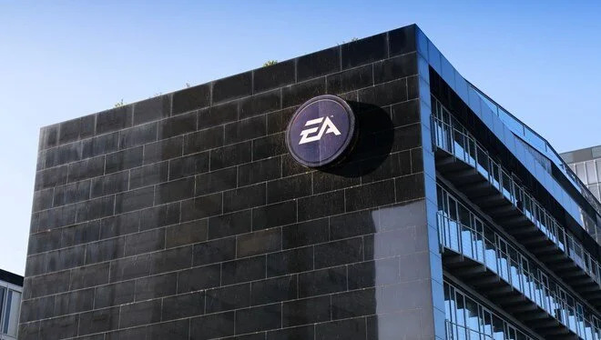

TEKNOLOJİ
Çin Uzay İstasyonunu Diğer Ülkelere Açacak

Dışişleri Bakanlığı Sözcüsü Vang Vınbin, yaptığı açıklamada, şu ana dek 17 ülkeden 23 kuruluştan 9 projenin istasyonda yürütülmek üzere seçildiğini belirtti.
Sözcü Vang, BM Dış Uzay İlişkileri Ofisi koordinasyonuyla yürütülecek deney ve araştırma projelerinin bu yılın sonunda başlamasını umduklarını ifade etti.
Çin'in dış uzayın barışçıl kullanımı ilkesine bağlı tüm ülkelerle uluslararası iş birliğine hazır olduğunu vurgulayan Vang, "Yabancı astronotlar Çin Uzay İstasyonu'nu ziyaret edebilir ve Çinli astronotlara pozitif katkı sağlayarak evrenin gizemlerini çözme ve insanlığın ortak geleceğini inşa etme konusunda birlikte çalışabilir." dedi.
Çin, ABD'nin uzay araştırmaları alanında iş birliğini yasaklaması ve Uluslararası Uzay İstasyonu (ISS) programına katılımını engellemesi nedeniyle kendi uzay istasyonunu kurmak için çalışmalar yürütüyor.
Ana iskelet kurulduktan sonra "Şüntien" (gökleri dolaşmak) adı verilen uzay teleskobu, ayrı bir modül olarak istasyona eklenecek.
İstasyonun 2022'de tamamlanabilmesi için yıl sonunda Şıncou (kutsal gemi) mekiği iki insanlı sefer ve Tiencou (gök gemisi) mekiği ile de iki kargo seferi yapılması planlanıyor.
EA kendisini satmaya karar verdi

Video oyun endüstrisinin önde gelen firmalarından Electronic Arts kendisini satmak için görüşmelere başladı. Disney, Apple ve Amazon gibi potansiyel alıcı ve ortaklarla görüşmeler yapıldığı iddia edildi. Kimin birleşmek ya da satın almak için görüştüğü ise şu aşamada net değil.
Interactive'in 12,7 milyar dolarlık Zynga satın alması ve Microsoft'un Activision Blizzard'ı satın almak için 68,7 milyar dolarlık anlaşması bulunuyor.
Dünyanın önde gelen video oyun şirketlerinden Electronic Arts (EA) kendisini satın alacak bir şirket arıyor.
Basına yansıyan bilgilere göre EA halihazırda Amazon, Disney ve Apple gibi dünya devleriyle görüşme halinde.
CEO Andrew Wilson daha güçlü bir şirketin çatısı altında şirketini yönetmeye devam etmek istiyor. Yani EA Games satılsa bile şirketin yöneticisi Andrew Wilson olacak.
Disney'in online yayın platformlarına odaklandığı için oyun şirketi satın almaya sıcak bakmadığı belirtildi.
Eski CEO Dorsey Twitter yönetim kurulunu eleştirdi
Twitter’ın kurucularından ve eski CEO'su olan Jack Dorsey, bir dizi tweet'te şirketin yönetim kurulunu eleştirdi.
Yönetim kurulu şu anda Tesla CEO'su Elon Musk'ın 43 milyar dolar bir değerlemeyle şirketi satın almasını değerlendiriyor.
Twitter'ın yönetim kurulu tarihinde erken dönemde ortaya çıkan "entrikalar ve darbeler"i anlatan bir Twitter kullanıcısına yanıt veren Dorsey, "Sürekli olarak şirketin işlevsizliği oldu" yanıtını verdi.
Dorsey bundan önce de bir başka tweet'e yanıt verdi. Girişim kapitalisti Fred Destin'in "Silikon Vadisi atasözü" dediği: "İyi yönetim kurulları iyi şirketler yaratmaz, ama kötü bir yönetim kurulu her zaman bir şirketi öldürür" sözüne cevap vererek: "Büyük gerçekler" yazdı.
Dorsey de halen Twitter'ın yönetim kurulunda yer alıyor ancak Mayıs ayı sonunda yapılması planlanan 2022 hissedarlar toplantısında görev süresi sona erdiğinde ayrılacak.
Twitter yönetim kurulu ise Musk’ı frenleyebilmek için “zehir hapı”nı devreye aldı: Herhangi bir kişi veya kuruluş kurulun önceden onayı olmadan hisse senetlerinin en az yüzde 15'ini biriktirirse, hissedarların indirimli hisse senedi satın almalarını sağlayacak sınırlı süreli bir hissedar hakları planını devreye alacak. Musk da satın alma teklifinden önce şirketten yüzde 9’un üzerinde hisse alarak en büyük kişisel ortak konumuna gelmişti.
Twitter’ın kurucularından olan Dorsey, daha önce de CEO olarak görev yaptı ancak 2008'de görevinden alındı ve yerine kurucularından bir başkası getirildi. 2015 yılında ise şirkete liderlik etmek için geri döndü.
Musk da hafta sonunda attığı tweet de, “Dorsey yönetim kurulundan ayrıldı. Twitter yönetim kurulu toplu olarak neredeyse hiç hisseye sahip değil! Nesnel olarak, ekonomik çıkarları hissedarlarla uyumlu değil” demişti.
Zoom'un yüz tanıma teknolojisi eleştirilerin hedefinde
Online görüşme uygulaması Zoom'un yapay zeka ile insan duygularını analiz edebilecek yeni teknoloji geliştirme çalışmalarına karşı, insan hakları grupları şirkete bir mektup gönderdi.
Geçen ay Zoom'un, kullanıcıların yüzlerini tarayabilen ve duygularını belirleyebilen yeni bir yapay zeka (AI) teknolojisi geliştireceği bildirildi.
TRT Haber'deki bilgilere göre, Zoom yeni teknolojinin gelişimine hız verirken Access Now, Amerikan Sivil Özgürlükler Birliği (ACLU) ve Müslüman Adalet Birliği gibi çeşitli insan hakları gruplarından bazı tepkiler alıyor.
25'ten fazla insan hakları grubu, Zoom'un yöneticisi Eric Yuan'a şirketin duygu temelli yapay zekaya yönelik çalışmaları durdurmak için bir mektup gönderdi.
ACLU yöneticilerinden Esha Bhandari, bunun gibi bir yapay zekanın "ürpertici bir teknoloji" olduğunu söyledi.
Fight for the Future'ın kampanya ve operasyon direktörü Caitlin Seeley George, "Zoom bu planlarla ilerlerse, bu özellik belirli etnik kökenlere ve engellilere karşı ayrımcılık yapacak ve insanların fazla düşünmeden ve çoğunlukla düz mantık kullanarak tasarladıkları bir milyonlarca insan profilini cihaza kodlayacak" dedi.
Zoom, AI teknolojisi için planlarını açıklamış, satış yapan kişilere görüştükleri kişilerin duygularını belirleyebilecekleri için yardımcı olacağını söylemişti.